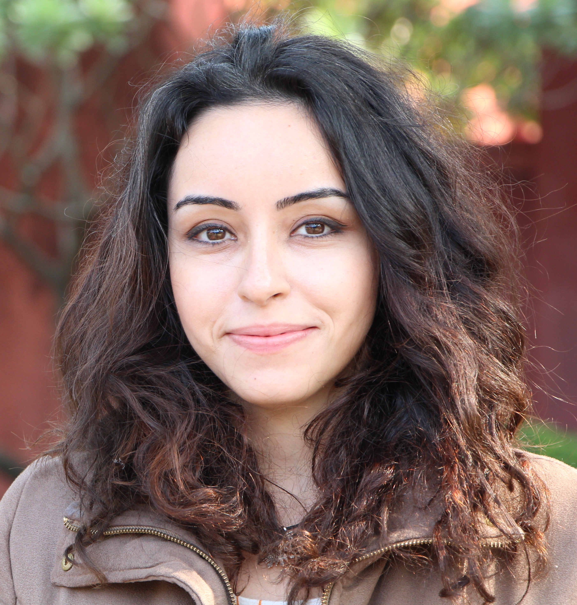

I am a postdoctoral scholar in the Ming Hsieh Department of Electrical Engineering at University of Southern California, working jointly with Prof. Salman Avestimehr and Prof. Antonio Ortega.
During my PhD, I was working with Prof. Aylin Yener in Department of Electrical Engineering at the Pennsylvania State University.
I am interested in developing scalable, privacy-preserving, and context-aware communication and information processing frameworks for large-scale distributed networks.
News:
I will be joining University of California, Riverside as an Assistant Professor in Fall 2020. I am looking for motivated students with a strong mathematical background. If you are interested in working with me, please send me an e-mail with your CV and research interests.
I can be reached at Room EEB 532, Ming Hsieh Department of Electrical Engineering.
Email: bguler at usc dot edu